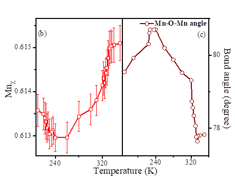
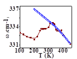
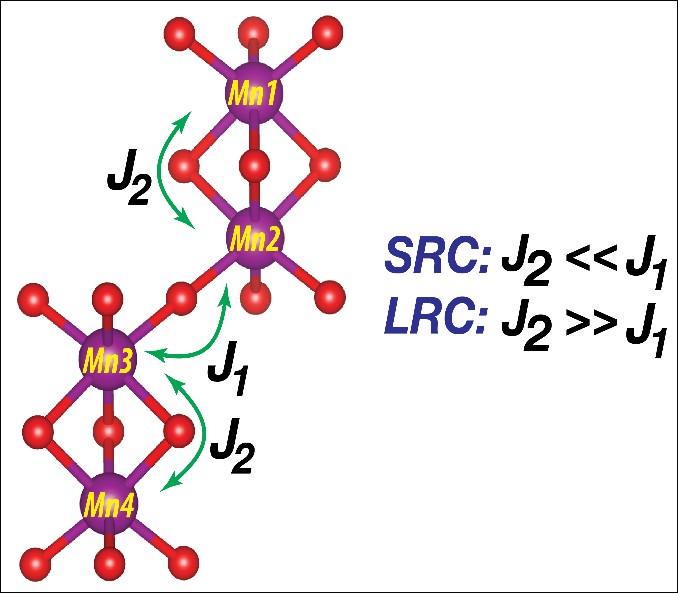
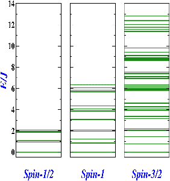
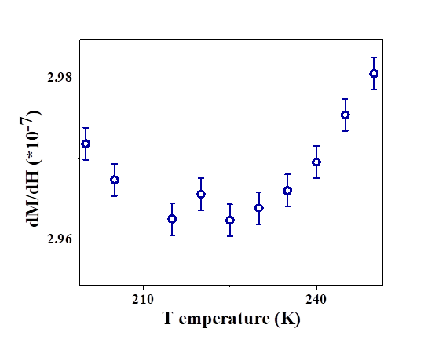
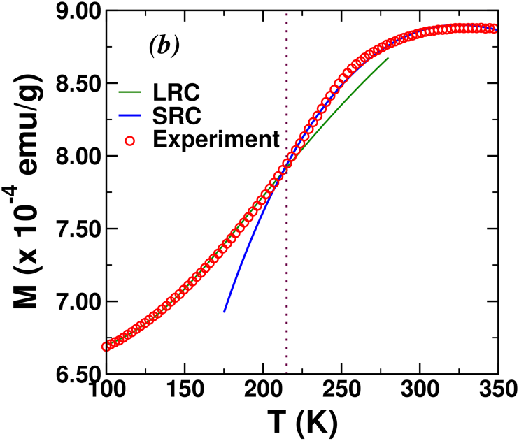
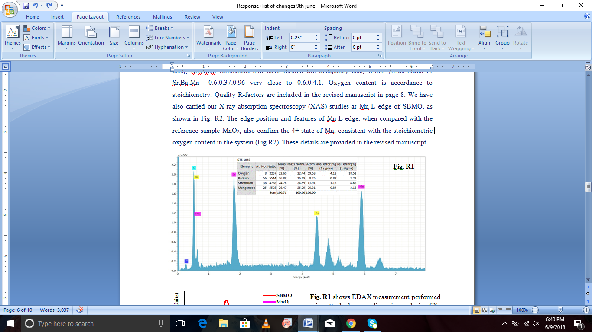
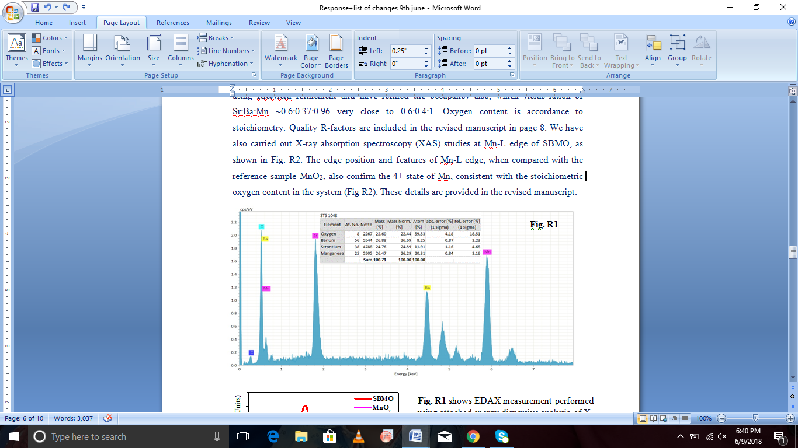

Hexagonal Sr
0.6
Ba
0.4
MnO
Room Temperature Magneto-electric:
Field Tunable Tunneling State and Entangled Pseudospin Clusters
Ritu Rawat
, R.J. Choudhary
*, A.M. Awasthi
*, Archna Sagdeo
, A.K. Sinha
, Rajamani
Raghunathan
, V.G. Sathe
, and D.M. Phase
UGC DAE Consortium for Scientific Research, Indore- 452 001, India
Indus Synchrotrons Utilization Division, Raja Ramanna Centre for Advanced Technology,
Indore- 452 013, India
Abstract
Hexagonal Sr0.6Ba0.4MnO3 undergoes ferroelectric (FE) and antiferromagnetic (AFM)
orderings having competing energetics within a narrow range close to the room temperature.
Magnetic properties appear to be governed by intricate exchange interactions among Mn4+ ions
within and in adjacent Mn2O9 bioctahedra, contingent upon local structural changes.
Calculations based on our model spin-Hamiltonian reveal that the linear AFM fluctuations
between the Mn4+ ions of two oxygen-linked bi-octahedra result in short range correlations,
manifest as a smooth drop in magnetization below 325 K. On the other hand, the non-linear
intra-bioctahedral Mn-O-Mn AFM interactions, which get enhanced and acquire long-range
character below 225 K, cause a slope-break in magnetization vs. temperature. Consequently, dual
magneto-electric effects are obtained, as the high-temperature soft mode FE phase first
transforms below 325K into a tunneling state, and then crosses over into a reentrant cluster glass
phase around ~225K. Vitreous character of the electrical cluster glass phase is examined by the
indispensable aging and rejuvenation effects, similar to the spin glasses. Field tunability of non-
FE regimes, defining pseudospin composites of entangled spin and dipole, offers a prototype for
room temperature atypical magneto-electricity. Frustration-competition involving spin-exchange
and local-strain is reckoned as responsible for the dual/±ve nature of magneto-electricity
obtained in adjacent temperature regimes.
multiferroics, magneto-electric, cluster glass
*
Keywords:
Corresponding Authors: ram@csr.res.in, amawasthi@csr.res.in
In recent years, in some magneto-electric materials including cubic Sr
1-
x
Ba
x
MnO
, the
prerequisite of
d
-ness is not enforced for ferroelectricity (FE) [1-6]. Rather, the FE-origin in
them is attributed to particulate atomic displacements responsible for the inversion-symmetry
breaking, softening the appropriate phonon modes— which couple with the magnetic ordering in
the material [7, 8]— thus realizing a novel mechanism for magneto-electricity. First principles
calculations on TbMnO
featuring larger ionic-displacements of Mn
3+
and Tb
3+
(vs. oxygen’s)
have adequately explained its observed FE polarization magnitude [9, 10]. Ferroelectricity in
cubic Sr
1-
x
Ba
x
MnO
is induced due to the
z
-displacement of Mn
4+
ion and modulation in O-Mn-
O bond angle, because of the different ionic radii of Ba and Sr. For half-doped cubic
Sr
1/2
Ba
1/2
MnO
,
t
hough the ferroelectric transition is observed at ~400K, magneto-electricity
occurs at and below the Nèel temperature
T
N
~185K [6].
In this study we unravel the manifestation of ferroelectric and antiferromagnetic
orderings in hexagonal Sr
0.6
Ba
0.4
MnO
(SBMO) within a narrow ambient range close to the room
temperature. The resultant coupling of magnetic, electrical, structural, and vibrational degrees of
freedom is experimentally established, along with recognition of peculiar electrical phases
displaying novel magneto-electricity (ME). It is observed that while the global-structure remains
the same, Mn-ion and oxygen-ions shift in position due to the strain applied by the doped Ba-ion,
leading to elongation of the two Mn-O bond lengths (albeit differently), causing polarization. In
antiferromagnetic regimes, non-ferroelectric/cooperative pseudospin (entangled spin- & dipole-
composite, [11]) phases are found field-tunable. The present study places SBMO amongst the
rare materials whose magnetic and electrical anomalies are both close to room temperature;
hence it possesses a tremendous potential for magneto-electric functionality.
Polycrystalline hexagonal Sr
0.6
Ba
0.4
MnO
(SBMO) was prepared using solid state
reaction method. Purity of the sample is confirmed using X-ray diffraction measurements and
Rietvield and Le Bail fitting. X-ray diffraction measurements were performed using table top D2
phaser Bruker X-Ray diffractometer. An energy dispersive analysis of X-ray (EDAX) unit
attached to
FEI NOVA Nano SEM 450 was used to record EDAX pattern. Near edge X-ray
absorption spectra was recorded at SXAS beamline BL-1, Indus-2, RRCAT, Indore. Raman
measurements were performed using a HR800 Jobin-Yvon spectrometer. He-Ne laser with a
wavelength of 632.8 nm was used to record Raman spectra in the temperature range of 90K to
450K. Magnetization measurement was carried out using 7T SQUID VSM (Quantum Design,
USA). Dielectric measurements over 10Hz to 1MHz were performed in the temperature range of
100K to 430K in cooling cycle using Alpha-A high performance frequency analyzer (Novo
Control). Specific heat
C
p
(
T
) was obtained at 5°C/min warm up rate from STAR
E
DSC-1
(Differential Scanning Calorimeter, Mettler-Toledo). Temperature dependent XRD
measurements were performed using Synchrotron source at RRCAT Indus-2, BL-12. Field
dependent isothermal magneto-dielectric measurements at 1kHz|
210K
and 1MHz|
300K
were
performed using Alpha-A high-performance frequency analyzer (Novo Control) and a 9Tesla
Integra cryostat/magnet (Oxford NanoSystems).
XRD analysis of the SBMO sample with Rietvield refinement and Le Bail fitting
performed using Full Prof software confirms its single phase nature with hexagonal P6
/mmc
symmetry (shown in Fig. 1(a)) [12, 13]. EDAX measurement confirmed the stoichiometry of
SBMO (shown in Fig. 1(b)). We have also carried out X-ray absorption spectroscopy (XAS)
studies at Mn-L edge of SBMO, as shown in Fig. 1(c). The Mn-L edge feature contains L3 and
L2 features due to spin-orbit coupling. The edge position and features of Mn-L edge, when
compared with the reference sample MnO
, also confirm the 4+ state of Mn, consistent with the
stoichiometric oxygen content in the system. Magnetization measurements reveal two magnetic
anomalies at
T
=325K and
T
=227K. Linear
M
-
H
behavior [12] (not shown here) below both
these benchmark temperatures evidences antiferromagnetic character below the room
temperature. In SBMO, two face-shared MnO
octahedra stacked along the
c
-axis form bi-
octahderal Mn
O
. This gives rise to two Mn-O-Mn interactions; a 180° linear Mn-O1-Mn (
J
)
and another non-linear Mn-O-Mn (
J
) (bond angle 78.36°, as estimated from the analysis of the
XRD pattern, Fig. 1(d)). Both the observed anomalies are due to alterations in local structure,
affecting the superexchange interactions in both these networks [12]. The two anomalies are
further confirmed by fitting magnetization with spin-Hamiltonians for separate temperature
regimes, as discussed later in the manuscript in detail.
To establish the bona fides of the dielectric data on our ceramic specimen, we first
examine and isolate the
ω
-
T
ranges of its main contributions. As the losses (
εʺ
=
σʹ
/
ε
ω
) from
various channels simply add up; vis-à-vis bulk, the extrinsic conductivity due to electrode
surface layer and grain-boundaries dominates at low-
ω
and high-
T
, having its stronger thermal
activation character (
𝜎
?
~
𝑒
?
?
?
?
?
?
, with
𝐸
?
???
>
𝐸
?
???
) and slower frequency dependence (1/
τ
ext
< 1/
τ
int
) [14, 15]. Therefore, to carry out a worst case analysis, we select our room temperature
data, taken over a moderately broad frequency range (1Hz-1MHz). At room temperature, no
relaxation loss-peak (in
εʺ
or tan
δ
) is observed— which appears to be shifted up and out of our
measurement frequency range— therefore, we employ the ac-transport representation for the
purpose. To this end, the complex impedance Nyquist plot is shown in Fig.2, with full range in
the main-panel and its low-frequency zoom in the right-inset. From the clearly tri-sectioned
behavior of the Nyquist plot, we immediately discern that the ‘linear’
Z
ʺ
vs.
Z
ʹ
regimes are due to
the responses attributed to electrode surface layer (sample-boundary) for
f
≲
60Hz, and to the
grain-boundary for
f
≲
1kHz. Their origin is the nearly constant/dispersion-free conductivity (left
inset/right
y
-axis, with
σʹ
≫
σʺ
), where the ‘constant’ slopes of
Z
ʺ
(
Z
ʹ
) at low frequencies directly
relate to the ‘power-law’ manifestations of tan
δ
(
ω
)—
Δ
Z
ʺ
/
Δ
Z
ʹ
∝
𝑑
log
(
tan
𝛿
)
𝑑
log
𝜔
. Typically
large losses (
Z
ʹ
/
Z
ʺ
=
σʹ
/
σʺ
=
εʺ
/
εʹ
≫
) here characterize the two extraneous contributions. The
‘linear’
Z
ʺ
vs.
Z
ʹ
regimes signify the well-known ‘constant phase element’ [16] feature of our
room temperature dielectric data, as also shown in the left inset (left
y
-axis). Furthermore, the
higher-frequency impedance (
Z
*) traces out a semicircle and dispersive conductivity follows the
Jonscher power-law (left inset/right
y
-axis);
𝜎
???
?
𝜔
=
𝜎
??
?
[
+
𝜔
𝜔
?
?
]
, reflecting the bulk
response. Therefore, the room temperature ac-response above ~
O
(kHz) is rigorously delineated
as predominantly intra-grain, and can thus be safely treated as intrinsic. The extrinsic/intrinsic
crossover frequency downshifts at lower temperatures; e.g., by some two orders of magnitude at
150K.
Dielectric constant
ε′
(
T
) (Fig. 3(a)) shows a peak at
≈
355K (marked P1, which is
frequency-indifferent up to ±3K)— evidencing a “quasi-local FE” transition for SBMO. Specific
heat (
C
p
-
T
, inset) also clearly depicts a wide peak at 357K near the Curie temperature
T
C
. About
~130K below P1, slopes of decreasing
𝜀
?
?
(
𝑇
)
steepen with frequency dependent shoulders
(marked as P2, close to
T
). Plotted on the logarithmic scale (Fig. 3(b)), the dielectric constant is
seen to enter a ‘plateau’ region some ~30K below P1 (for all
ω
’s), which lasts down to P2. In
d
ε′
/
dT
plot (inset of Fig. 3(b)), two sets of peaks are noticed; one with a systematic
ω
-
T
dispersion, corresponding to the shoulder (feature P2 in Fig. 2(a)) and another, relatively
frequency in-deviant one around ~320K. The latter peak in
d
ε′
/
dT
is close to
T
, signaling a
magneto-electric (ME) coupling. Upon cooling across this temperature, the usual steeply-
decreasing
𝜀
?
?
(
𝑇
)
(consequent to the increasing polarization
P
) give way to the gradually-sloping
plateaus (Fig. 3(b)). Emergence of plateaus at ~320K (relatively frequency-indifferent) signifies
spin-order imposed breakage of the quasi-long-range polar state— resulting in the response of
smaller entities lacking a sizescale, as reckoned below. Furthermore, shoulders near
T
dispersed
across ~P2 (plateaus’ demise) clearly evidence another magneto-electric switchover, to a
reentrant segmental electrical-organization (size-distributed entities’ response), triggered by the
second magnetic anomaly. Loss tangent
tan
𝛿
?
(
𝑇
)
in Fig. 3(c) shows dispersive peaks, shifting
towards higher temperature at increasing frequency. Above ~227K, magnitude and dispersion of
tan
δ
(
T
) change abruptly, as illustrated by the locus of the peak-maxima. Interestingly, this
temperature coincides with
T
. Note that the typical “flat loss” spectral feature [17]
is not
observed here, which characterizes the relaxor ferroelectrics viz., the merging of loss tangent
curves of different frequencies on their lower-temperature side. Therefore, the data apparently
rule out the signature of polar nano regions (PNR’s)/relaxor state, consequent to the expected
electric-phase-changes at the
T
and
T
.
We reiterate that the smeared peaks obtained here in the dielectric constant within close
proximity of our designated
T
C
~355K are not rooted in relaxations, since the associated loss
tangent values (inset of Fig. 3(c)) are devoid of any otherwise-necessitated peaks/maxima.
Neither do the imaginary-permittivity/modulus and real-impedance functions feature any peaks
over the same
T
-window. Importantly, no generic relaxations in the dielectric spectra accompany
a peak feature in the heat capacity data, which we clearly observe near
T
C
(inset of Fig. 3(a)).
Large measured permittivity (~
O
(10
) near 355K) is commensurate with that of other
ferroelectrics’ near their
T
C
[18], including that of the single crystal KDP [19]. In a very recent
review, Scott and Gardner [20] have observed that in typical magneto-electric materials,
somewhat ‘imperfect/distorted FE signatures’ often indicate the existence of quasi-local order,
which grows into robust/long-range ferroelectricity in their nanostructured/thin-film formations,
as confirmed in the case of samarium orthoferrite (SmFeO
) by Chaturvedi et. al. [21]. Nature of
the sub-
T
C
relaxation kinetics, evaluated below, serves to recognize the exact electrical phases in
the hexagonal SBMO, coexistent with its intricate magnetically ordered state(s).
For a precise determination of the electrical relaxation character, fits on the frequency-
domain tan
δ
T
(
ω
) were performed (Fig. 3(d)), using general Havriliak-Negami (H-N) expression
for the complex permittivity [15]:
𝜀
∗
=
𝜀
′
−
𝑖𝜀
″
=
??
[
?
?
???
?
]
?
−
𝑖
?
?
??
?
+
𝜀
?
(1)
Where
ε
*
is the complex permittivity,
ε″
is imaginary permittivity,
Δε
is known as dielectric
strength of the material,
τ
is the mean relaxation time,
σ
is d.c. conductivity, and (0
≤
α
,
β
≤
1)
parameterize the width (broadening) and shape (asymmetry) of relaxation peak spectra,
respectively. Optimized
α
,
β
≠
1 from the H-N fits to tan
δ
T
(
ω
) spectra mark their asymmetry
(Fig. 3(d)) and
T
-dependent/extra-Lorentzian FWHM (inset), affirming the non-Debyean nature
of the observed relaxations [15]. Corroborating the inference drawn from analyzing the room
temperature data (Fig. 2), the non-Debyean character clearly discounts any significant extrinsic
charges, or to the hopping of intra-granular oxygen-ions. Such independent and uncorrelated
polaronic degrees of freedom represent extraneous and conduction-dominant responses, which
may feature generic Lorentzian relaxation at very low frequencies, corresponding to the basic
Debyean exponential time-decay dynamics [22].
Accurate
τ
(
T
) obtained from the optimum H-N fits is plotted as ln(
τ
) versus
T
in Fig. 4.
Clear change of curvature in ln(
τ
)-
T
at 220K reveals two types of relaxation mechanisms (I and
II). Region II indicating low temperature divergence fits the characteristic power-law for cluster
glasses, borrowed from critically-diverging dynamics of spin-glasses [23];
𝜏
=
𝜏
ₒ
?
?
?
?
?
?
?
??
(2)
Here
τ
ₒ
is the approach time for the nascent (just nucleated) dipole-clusters,
T
g
is the glass
transition temperature, and
zv
is dynamic exponent. Best fit yielding
τ
ₒ
= 10.79µs,
T
g
= 100.83K,
and
zv
= 7.39 is shown in Fig. 4. Optimized dynamic critical exponent is comparable to that for
BaTi
0.65
Zr
0.35
O
(BTZ35) [24], and for the 3D magnetic dipolar glass LiHo
.
Y
.
F
[25].
Richert et. al. [26] showed in a calculation that asymmetry (
β
≠
1) of relaxation peak reflects as
longer
τ
H-N
(by up to
×
3.6 here) versus the
τ
m
read off directly from the peak-maxima— latter
contributions to the dielectric response due, e.g., to the Maxwell-Wagner type inter-granular free
commonly used in Eq. 2. Rising sluggishness
𝜏
?
→
?
?
∞
of dynamically cooperative glassy
clusters owes to their diverging size-scale
𝜉
?
→
?
?
𝑇
−
𝑇
?
?
?
, since the critical relaxation time
itself scales with the correlation length as
𝜏
~
𝜉
?
[27, 28]. Taking
z
≈
3 for reasonably isotropic
(bulk) correlations— comparison with typical relaxor-PNR’s (size ~
O
(nm) and approach time
~
O
(10
) ps) estimates the cluster size here as
ξ
SBMO
~
O
(10
) nm— the mesoscopic scale.
The anomalous/non-activated behavior of
τ
(
T
) in region I (Fig. 4), bending over to
saturation on the lower-
T
side— also witnessed in (Gd, Eu, Tb, Dy)MnO
by Schrettle et. al.
[29]— indicates local quantum tunneling mechanism [30] for the relaxation dynamics, involving
small groups of only a few dipoles, lacking barrier-activation and size (distribution). This
explains frequency-independent origin of
𝜀
?
?
(
𝑇
)
-plateaus, as the response due to nominally-
cooperative entities, defining no lengthscale. A generic/polynomial fit to ln
τ
(
T
) here yields
τ
sat
≈
4.4µs for the asymptotic low-
T
relaxations over 220-245K, which may relate to the basic
quantum tunneling rate. Interestingly, the quantum mechanical tunneling (QMT) is also indicated
in this regime by a relatively constant Jonscher power-law index
n
(
T
) [30]
of our a.c.
conductivity isotherms
σ
T
(
ω
) =
σ
dc
(
T
)[1+(
ωτ
)
n
] (not presented here).
We have directly witnessed the essential aging and rejuvenation attributes of the
electrical cluster glass phase (region II in Fig.4) by performing the isothermal waiting
experiments below and above
T
g
. Following the standard protocol similar to as employed e.g., in
the literature [31, 32], our results for the dielectric constant measured at 15 Hz over 50-160K are
shown in Fig. 5. We chose the low probing frequency, so the bigger magnitudes of both the
dielectric constant and the changes in it, measured over the temperature window of interest,
provided a good signal to noise ratio for the aging effects as well. We first note that the
uninterrupted baseline runs (
&
) at uniform temperature-ramps (±0.5K/min, solid & dash
line curves in the main panel) reveal a clear hysteresis between the cooling and warming data,
along with their excellent overlaps at the lower and upper temperature-ends. This anomalous &
novel feature is hitherto unreported, to the best of our knowledge, and its reproducivity has been
duly verified by us over repeated cycles. Secondly, the isothermal aging/annealing in otherwise
uniformly cooled run (
; open stars in the main panel) involved several hours’ waiting and data
collection each at three temperatures viz., ~ 1.1
T
g
, 0.9
T
g
, and 3/4
T
g
(lower inset). Clearly
measurable ~
O
(10)% decays in dielectric constant were recorded in the isothermal experiments.
Fractional falls during aging at these selected temperatures below the uniform cooling baseline
are shown in the upper inset. Asymptotic rejuvenations back to the uniform cooling baseline (to
within ~2%) in the post-isothermal/succeeding cooling laps are similar to those reported for the
electrical cluster glasses [33] and for spin glasses [34]. Also shown in main panel is the
uniformly warm up data (
; open circles in the main panel) taken immediately after the cooling
run interrupted with the three isothermal waitings. Surprisingly, in this special warm up run, we
did not encounter any detectable trace of the dielectric ‘holes’ created at the isothermal waiting
temperatures. This anomalous absence of the so-called ‘memory’ effect has been reproducibly
confirmed over repeated such cycles. The excellent overlap of post-aging (circles) and generic
(dashes) warm up runs’ data, over the full temperature range of observation is remarkable. We
did not find a repeat cooling run
measurably different from the original baseline uniform
cooling
, and the same is not shown here for clarity. Essentially, all the same features, albeit
having rather low signal-to-noise ratios, were also observed at 110 Hz probing frequency.
Consistent with sub-
T
g
non-ergodicity (inability of glassy state to visit all its dynamically
sluggish metastable states on finite timescale), relatively largest (upper inset) & slowest (lower
inset) isothermal-aging-drop in
εʹ
are seen during waiting at 91K (i.e., just below
T
g
).
Consolidation of dynamical freezing with further lowering of temperature (with still possible
thermal activation of yet-fewer/incompletely-frozen/less-sluggish metastable states) causes a
lower drop at ~3/4
T
g
. We are given to understand the ‘no memory’ (warm up run,
) signals
witnessed here as consistent with fairly large and fast isothermal aging attribute— decays
completed at the waiting temperatures within ~
O
(hr) (lower inset, also see [32]), along with the
rapid rejuvenations on reverting back to the cooling lapses of the run
. As per discussed in the
next sections, witnessed increase & decrease of the Mn-O bonds’ inequivalence and phonon
softening & hardening— signifying high flexibility of the local structural adjustments and
vibronic attributes— are the definitive convict for the observed features of our
aging/rejuvenation/memory findings.
Temperature dependent XRD patterns (150K-350K) were recorded using synchrotron
source. R
exp
= 9.14%, R
wp
= 11.4%, R
p
= 10.4%,
χ
= 1.56 were obtained for 300K, giving a
respectable fit [35]. XRD patterns upto lowest temperature measured reveal that the crystal
symmetry remains P6
/mmc down to low temperatures, thereby ruling out a robust (long range)
ferroelectric ordering. In Fig. 6(a) we have plotted the difference in Mn-O and Mn-O1 bond
lengths (
Δ
) versus temperature. At 350K, we observe inequivalent Mn-O and Mn-O1 bond
lengths. Here, in MnO
octahedra, bond length between Mn-O1 and Mn-O differs by ~0.05Å
(inset of Fig. 6(a)). Therefore, inversion symmetry is locally broken in SBMO, which is the
driving factor for the observed ferroelectricity at ~355K, although SBMO maintains overall
centrosymmetric P6
/mmc structure over the studied temperature range. Local nature of the
inversion symmetry-breaking is but reflected as the ±3K spread obtained in the FE-
T
C
, vs. the
probing frequency (Fig. 3(a)). It should be noted that though Rietveld analysis provides
information related to an average long-range structure, yet at local or short range level, the
structure can adopt non-centrosymmetric character, yielding inequivalent bond lengths [36-41].
Furthermore, numerical calculations have shown that the local breaking of inversion symmetry
directly controls the microscopic origin of the Boson peak in model crystal systems [42]. It is
also observed from Fig. 6(a) that
Δ
increases with decrease in temperature down to ~330K,
reflecting the enhancement of local inversion symmetry breaking. We denote 330K-350K as the
ferroelectric region (FR).
As is evident from Fig. 3(b), a plateau behavior in the dielectric constant emerges below
T
; reflected as ‘frequency in-deviant’ peaks in
d
ε′
/
dT
near 320K (inset). From Fig. 6(b), which
shows the shift in Mn position along
z
-direction, it is evident that below
T
, antiferromagnetic
exchange
J
significantly
z
-shifts the Mn-atoms. The shift
Δ
z
of Mn causes an ‘ambivalent drop’
in
Δ
, which suppresses/stagnates the polarization. These observations suggest that here the
dominant magnetic interaction (
J
>>
J
) opposes the local inversion symmetry breaking. Hence,
below
T
, effective magnetic exchange energy clearly works against the elasto-electric
interaction energy. We denote this temperature range (325K-227K) as the tunneling region (TR).
With further decrease in temperature below
T
, Mn shifts in the opposite
z
-direction, (Fig.
6(b)). This
Δ
z
turnover of Mn-position reflects the rise-back of bond-length inequivalence (co-
increasing
Δ
, (Fig. 6(a)), leading to a ‘reentrant buildup’ of dynamic dipolar correlations. The
magnetic anomalies at
T
and
T
combined with the associated spin-phonon coupling cause zig-
zag variation of
Δ
(
T
) across the TR regime, leading to cooperatively relaxing dipoles with
sluggish/glassy character (up to only meso-sized, ~
O
(10
) nm) upon cooling. We denote the
temperature range below 225K as the glass region (GR). Shifts in the Mn
z
-position also lead to
concurrent variations in the Mn-O-Mn bond-angle (Fig. 6(c)), which too reflects anomalies
across
T
and
T
. Singh et. al. showed for 0.9BiFeO
-0.1BaTiO
composite that while the
structure remains the same, change in bond-angle across the magnetic transition temperature and
hence, shifts in the position of atoms attributes to the origin of ferroelectricity [43].
The observed magneto-structural-vibrational coupling is further manifest in the Mn-
displacement E
1g
Raman mode, as shown in inset of Fig. 6(c). Across the ferroelectric transition
(
T
C
) and magnetic anomalies (
T
and
T
), mode-position deviates from the usual thermal
anharmonic background. Below
T
C
, softening of the phonon mode is expected. Therefore, due to
the competition between ferroelectricity build-up and anharmonic behavior, a fleeting
‘stagnation’ of Raman shift is observed just below
T
C
. The re-softening trend below 250K itself
suggests that precursor effects of the second antiferromagnetic (non-linear Mn-O-Mn
superexchange) interaction are present in the system even above
T
= 227K. These findings
evidence that the exchange interactions cause anomalies in the lattice vibrations across
T
i
-values,
confirming the spin-phonon coupling in SBMO [12, 44, 45], also observed in strained EuTiO
,
cubic SrMnO
, and Ba-doped cubic SrMnO
multiferroics— through softening of their magnetic-
ion related phonon mode— as a crucial signature for multiferroicity [7, 8, 46].
Now we discuss the rationale for the observed magnetic behavior. In SBMO, an intricate
magnetic behavior is anticipated. The unit cell (
u.c.
) of this 4H structure has two face-sharing
Mn
O
bi-octahedra; which in turn link together in a corner-sharing fashion through a common
oxygen (Fig. 7(a)). The corner-shared linkage leads to a 180° antiferromagnetic superexchange
(AF-SE) (
J
) in the network. Further, within the bi-octahedra, the short Mn
4+
-Mn
4+
distances
(~2.50 Å) and the ~80° Mn
4+
-O-Mn
4+
triads through the face-shared oxygen atoms lead to direct-
(
J
D
) and super-exchange (
J
S
) interactions respectively, giving rise to an effective magnetic
exchange
J
. The actual strength and sign of the magnetic interactions
J
and
J
will depend on
the extent of the orbital overlap between the magnetic ion and the intervening oxygen [47].
Convolution of the microscopic exchange interactions at work over particulate temperature
windows effectively determines the magnetization status of the system therein.
From our magnetic data, as shown in Fig. 7(b) we observe that below 325 K, the
magnetization starts decreasing gradually; albeit the width of the transition is rather broad.
Below 225 K however, magnetization drops even more gradually, with a discontinuity in its
slope. Though our temperature dependent XRD experiments show no significant change in the
u.c.
dimensions around this temperature, the Mn
z
position and Mn-O-Mn bond angles show clear
anomalies. We notice that the Mn-O1-Mn linkages corresponding to the 180° superexchange
interactions through the corner-linking oxygen show a gradual changeover in bond distances
close to 325 K; though the magnitude of the change is relatively small, the bond angle remains
almost linear throughout the temperature range studied here. On the other hand, the Mn-O-Mn
bonds within the bi-octahedra undergo a sharp variation close to 225 K; the Mn-O-Mn bond
lengths change by about 0.1 Å (~2.5%), and angles show an overall ~1
o
change.
The structural information presented above suggests that sharp changes in the magnetic
exchange interactions are plausible close to 225 K. These are further corroborated with
anomalies in the
E
1g
mode-position, observed in the temperature dependent Raman spectra.
Thus, the magnetic anomaly occurring at 225 K can be associated with local structural changes,
implying spin-phonon coupling. An electronic model that incorporates spin-spin, phonon-
phonon, and spin-phonon interactions is necessary to describe such mechanisms. This is further
complicated by the spin-orbit interactions of the metal ion and the crystal field effects due to the
surrounding ligands in the octahedron. The Heisenberg spin-Hamiltonian, being a mean-field
model, does not describe such interactions adequately. However, a rudimentary way to model
this is by fitting the magnetization data, using an effective spin-Hamiltonian for the two
temperature regimes namely; (1)
T
> 225 K, wherein antiferromagnetic interaction between Mn
4+
ions of linear Mn-O1-Mn bonds leads to short range correlations (SRC) and, together with weak
interactions between Mn
4+
ions of non-linear Mn-O-Mn bonds, give rise to a broad feature at 325
K, and (2)
T
< 225 K, where the local structural changes sharply increase the intra-bioctahedral
Mn-O-Mn antiferromagnetic interactions, resulting in long-range correlations (LRC).
The magnetic data can be modeled by considering the Hamiltonian,
𝐻
̂
=
−
𝐽
?
𝑆
̂
?
⋅
𝑆
̂
?
−
𝐽
?
𝑆
̂
?
⋅
𝑆
̂
?
−
𝐽
?
𝑆
̂
?
⋅
𝑆
̂
?
−
𝐽
?
𝑆
̂
?
⋅
𝑆
̂
?
(1)
With
J
<<
J
for
T
> 225 K and
J
>>
J
for
T
< 225 K, where,
J
(
J
) corresponds to the
strength of inter (intra) -bioctahedral exchange interaction,
S
i
’s
are the spin operators, and the
subscripts on the spin operators correspond to the indices of Mn
4+
sites in a
u.c
. The interaction
between sites ‘4’
and ‘1’ imposes the periodic boundary condition in the
u.c
. Positive (negative)
values of
J
i
correspond to ferromagnetic (antiferromagnetic) interactions. The model
Hamiltonian in eq.(1) conserves both total
𝑆
^
?
and
𝑆
^
?
operators and hence it is possible to
construct the Hamiltonian matrix (
H
) either in total-
S
or in total-
M
S
basis. However, in this case
the
H
-matrix is constructed in constant-
M
S
basis, and then the eigenstates
E
(
S, M
S
) of the spin
model are numerically obtained by full diagonalization [48]. The expectation values of the
𝑆
^
?
and
𝑆
^
?
operators for each eigenstate are obtained, from which the total spin
S
and
M
S
of the state
are deduced. Finally, the magnetization of the system as a function of temperature (
T
) at a chosen
magnetic field (
H
Z
) is obtained from the relation,
𝑀
𝐻
,
𝑇
=
𝑁
?
𝑔
𝜇
?
?
?
?
?
?
?
,
?
?
?
?
?
?
?
?
?
?
?
?
?
?
?
?
?
?
?
?
,
?
?
?
?
?
?
?
?
?
?
?
?
?
?
?
?
(2)
where,
N
A
is the Avogadro number,
µ
B
is the Bohr magneton value,
g
is the Lande
g
-factor
(taken to be 2.0), and magnetic field
H
z
is set to 0.01 Tesla, as per the experiments. The magnetic
data in the temperature range 225K-350K is fitted by iterating over the values of
J
and
J
(Figure 7(b)). Our best fit for the magnetization data in this temperature region yields
J
= -18
meV and
J
= -2.16 meV. We further notice that the value of magnetization for the highest
temperature reported is far less than the spin-only moments of four uncorrelated spin-3/2 species
per
u.c.
i.e., 3.3
x
emu/gm; suggesting that even at 350 K, the system has not transformed
fully into the paramagnetic state. In order to understand this, we computed the energy spectrum
of spin- 1/2, 1, and 3/2 systems using the above Hamiltonian (Fig 7(c)), keeping the values of the
model parameters unchanged. We notice that, unlike the systems with small site-spins, the spread
in the energy of the eigenstates is fairly large for higher site-spins. In order to realize
paramagnetic state, it is necessary that all the spin states are populated. However, in our present
case, the higher site-spins of Mn
4+
ions lead to states that have wider spread in energy, thus
requiring higher temperatures (vis-à-vis
J
i
/
k
B
) to reach the paramagnetic state, as confirmed from
our magnetic measurements, which did not show any signature of Curie-Weiss behaviour until
750K.
Now, we turn our focus on regime-2, corresponding to temperature values below 225K.
Here, we consider the enhanced
non-linear Mn-O-Mn superexchange via the face-shared oxygen
plus the direct Mn
4+
-Mn
4+
exchange (
J
>>
J
), that facilitates long-range ordering in the system.
This is supported by temperature dependent neutron diffraction studies on similar systems [13],
which showed long-range AFM ordering of both intra- and inter-bioctahedral Mn
4+
spins below
270 K. The Hamiltonian (1) is once again solved by the method discussed above, with
J
fixed at
-18 meV. The magnetic data is fitted via iterative process, by allowing only
J
to vary, with the
condition that
J
>>
J
; our best fit yields
J
= -86 meV. The strong antiferromagnetic nature of
the effective interaction
J
vis-à-vis
J
can be understood in terms of the contributions from both
(enhanced) super- and direct- exchange mechanisms between the Mn
4+
ions within each bi-
octahedron.
It should be noted that previous first-principles calculations based on the density functional
theory had shown that there is no significant direct overlap of charge densities between the two
Mn
4+
ions of the bi-octahedron [49]. However, it should be noted that these calculations were
based on ground state structures, and hence the local distortions taking place versus temperature
were not taken into consideration. In a related previous study on magnetic properties of 4H-
SBMO, the SRC’s at high temperatures were assigned to antiferromagnetic fluctuations within
the bi-octahedron, and the low temperature properties were described based on the onset of
LRC’s due to the inter bi-octahedral interactions [50]. On the contrary, our experimental results
on the crystal structure, Raman spectra, and magnetic measurements, supported by our
theoretical model, show that the broad hump occurring at 325 K is a result of antiferromagnetic
fluctuations between Mn
4+
ions of two
adjacent
bi-octahedra, and the long range ordering sets
with the sudden increase of magnetic exchange
within
the bi-octahedron, as a result of the local
structural distortion.
To further confirm that below 225 K, a different magnetic arrangement takes over, we
performed magnetization versus field measurements from 200 K to 300 K at 5 K interval. From
these measurements, we plotted
the slope of
M
-
H
curves versus temperature (Fig. 7(d)), which
show an anomaly at 225 K. Thus, our experimental results and model calculations throw light on
the strength of the magnetic exchange mechanisms involved in SBMO. Neutron diffraction
experiments as well as a microscopic electronic model that includes electron-phonon interactions
should deepen our understanding of the complex magnetism in this system, which needs to be
further explored.
Magneto-dielectricity MD(%) is given by [51]
𝜀
?
𝐻
−
𝜀
?
𝜀
?
(
)
×
We measured MD(
H
) under magnetic field up to 9T at 210K/1kHz and at 300K/1MHz, shown in
300K
(
H
) is all-positive, MD
210K
(
H
) is all-negative valued. To
discern if and how the (magneto) conductance influences our results, we have also plotted the
magneto-loss [51]
ML
(
%
)
=
???
?
?
?
???
?
?
???
?
(
?
)
×
at both 210K (LT) and 300K (RT) in Fig.
8(a, b). Linear MD(
H
) and low-lying/flat ML(
H
) (solid lines) yielding |MD/ML|
LT
~ +(6-11)dB
and |MD/ML|
RT
~ +(10-13)dB unambiguously ascertain robust and genuine magneto-dielectricity
over ~2-5 Tesla field-window. Moreover, under (5-7)T field, the same order of magnitude
changes in MD
RT
and ML
RT
(traceable to
tan
𝛿
∝
𝜀
′
?
?
, by definition) while |MD/ML|
RT
≥
+3.5dB evidence little influence yet of room temperature magneto-resistance [51]. Lastly, above
~7T, decreasing MD
RT
and increasing ML
RT
of comparable magnitudes are predominantly
determined by the (magneto) conductance; thereby rendering the room temperature ME character
rather conspicuous at higher fields. The circumstance above ~5T field is evidently more
favorable at lower
T
’s, with suppressed (magneto) conductance; so that |MD/ML|
LT
≈
O
(10).
To better understand MD
T
(
H
), we performed close by magnetization measurements.
From Table 1, it is clear that
T
and
T
are both maximum at ~5-6T, above which they both show
measurable decreases. Now, referred to Fig. 3(b),
T
and
T
respectively mark the sharp start and
dispersive demise of the
ε′
(
T
)-plateaus. Therefore, vis-à-vis the usual (otherwise expected) steep
decrease of the dielectric constant below
T
C
, the interjecting 180°-AFM anomaly at
T
effectively ‘increases’ the
ε′
-values, while relative to the
ε′
(
T
)-plateaus, the second AFM
anomaly at
T
effectively ‘decreases’ the same. Since the applied field initially increases both
T
and
T
, this explains
both
why MD(
H
) at 300K (below
T
= 325K) is positive (higher plateau
under the field) and at 210K (below
T
= 227K) is negative (plateau-shoulder occurs at higher
temperature under the field). Further, concurring decreases of
T
and
T
for
H
> 5-6T explains
the respective turn-backs of MD(
H
) across ~7T at both 300K and 210K. We finally remark that
genuine ME as demonstrated— along with the observed non-Debyean relaxation and bulk-nature
of the high-frequency response at sub-ambient temperatures— adequately guarantee the ME-
origin from an essentially intrinsic dielectric response.
Fig. 8(a, b). While the isotherm MD
Summarizing our work, it is established that the improper-ferroelectricity manifest in
Sr0.6Ba0.4MnO3 arises from the structure-conserving/locally-unequal Mn-O bond lengths in the
MnO6 octahedra. The magneto-electricity here is due to the Mn-displacement soft-phonon mode
being coupled to the spins in the material. The two magnetic anomalies at 325K and 225K here
accompany concurrent anomalies in its structural parameters and changes of its electrical states.
The smooth magnetization-maximum at 325 K is a result of antiferromagnetic short range
correlations between Mn4+ ions of two adjacent bi-octahedra and owes to the local structural
distortion, as per confirmed from calculations with a model spin-Hamiltonian. The long range
ordering sets in upon the sudden increase of magnetic exchange interaction between Mn4+ ions
within the bi-octahedron; responsible for the second magnetic anomaly and its associated
magneto-electric manifestation. The two particulate magneto-electric effects of opposite signs
are traceable to spin-exchange/local-strain frustration for free energy minimization. Here, the
crossover upon cooling from the soft-mode ferroelectricity breaking into reentrant cluster-glass
phase via tunneling state has been maidenly recognized. The electrical cluster glass phase is well
confirmed by its characteristic aging and rejuvenation features. From our study, SBMO comes
across as one of the rare multifunctional materials, where FE and AFM orderings occur within a
narrow ambient window close to room temperature. In this perspective it is vital to explore the
oriented/epitaxial films of similar materials, which in bulk form exhibit soft mode FE ordering,
even though their global structure is centrosymmetric. Indeed, the observed AFM ordering can
also be tuned in such epitaxial films to be ferromagnetic [7], upon choosing a proper epitaxial
strain.
Acknowledgements:
Authors are thankful to Dr. N.P. Lalla and Ms. Poonam Yadav of
UGC-DAE CSR, Indore, for providing zero-field dielectric data. Authors are also thankful to Mr.
Anupam Jana and Mr. Gyanendra Panchal for help in recording EDAX and XAS spectra
respectively.
References:
[1]
Daniel Khomskii, Physics
, 20 (2009).
[2]
Nicola A. Hill, J. Phys. Chem. B
, 6694 (2000).
[3]
W. Eerenstein, N.D. Mathur, and J.F. Scott, Nature
, 759 (2006).
[4]
Sang-Wook Cheong and Maxim Mostovoy, Nat. Mater.
, 13 (2007).
[5]
Daniel K. Pratt Jeffrey W. Lynn, James Mais, Omar Chmaissem, Dennis E. Brown
Stanislaw Kolesnik, and Bogdan Dabrowski, Phys. Rev. B
, 140401(R) (2014).
[6]
H. Sakai, J. Fujioka, T. Fukuda, D. Okuyama, D. Hashizume, F. Kagawa, H. Nakao, Y.
Murakami, T. Arima, A.Q.R. Baron, Y. Taguchi, and Y. Tokura, Phys. Rev. Lett
,
137601 (2011).
[7]
Craig J. Fennie and Karin M. Rabe, Phys. Rev. Lett.
, 267602 (2006)
[8]
S. Kamba, V. Goian, V. Skoromets, J. Hejtm´anek, V. Bovtun, M. Kempa, F. Borodavka,
P. Vanˇek, A.A. Belik, J.H. Lee, O. Pacherov´a, and K.M. Rabe, Phys. Rev. B
,
064308 (2014).
[9]
H.J. Xiang, Su-Huai Wei, M.-H. Whangbo, and Juarez L.F. Da Silva, Phys. Rev. Lett.
101, 037209 (2008).
[10]
A. Malashevich and D. Vanderbilt, Phys. Rev. Lett. 101, 037210 (2008).
[11]
W. Kleemann, S. Bedanta, P. Borisov, V.V. Shvartsman, S. Miga, J. Dec, A. Tkach and
P.M. Vilarinho: Eur. Phys. B
, 407 (2009).
[12]
Ritu Rawat, D.M. Phase, and R.J. Choudhary, J. Magn. Magn. Mater.
, 398 (2017).
[13]
A. Daoud-Aladine, C. Martin,, L.C. Chapon, M. Hervieu, K.S. Knight, M. Brunelli, and
P.G. Radaelli, Phys. Rev. B
, 104417 (2007).
[14]
P. Lunkenheimer, V. Bobnar, A.V. Pronin, A.I. Ritus, A.A. Volkov, and A. Loidl, Phys.
Rev. B
, 052105 (2002).
[15]
Broadband Dielectric Spectroscopy
, edited by F. Kremer and A. Schönhals (Springer,
Berlin, 2002).
[16]
Impedance Spectroscopy Theory, Experiment, and Applications
(2
nd
ed.), edited by E.
Barsoukov and J.R. Macdonald (John Wiley and Sons, New Jersey, 2005), pp295-296.
[17]
V.V. Shvartsman, J. Zhai, and W. Kleemann, Ferroelectrics
, 77 (2009).
[18]
Physics of Ferroelectrics: A modern perspective
, edited by Karin M. Rabe, Charles H.
Ahn, and Jean-Marc Triscone (Springer, 2007).
[19]
Jitender Kumar and A.M. Awasthi, Appl. Phys. Lett.
, 132903 (2013).
[20]
J.F. Scott and J. Gardner, (2018), https://doi.org/10.1016/j.mattod.2017.12.003.
[21]
Smita Chaturvedi, Priyank Shyam, Rabindranath Bag, Mandar M. Shirolkar, Jitender
Kumar, Harleen Kaur, Surjeet Singh, A.M. Awasthi, and Sulabha Kulkarni, Phys. Rev. B
, 024434 (2017).
[22]
Wei Li and Robert W. Schwartz,
Phys. Rev. B
, 012104 (2007).
[23]
P.C. Hohenberg and B.I. Halperin, Rev. Mod. Phys.
, 435 (1977).
[24]
W. Kleemann, S. Miga, J. Dec, and J. Zhai, Applied Physics Letters
, 232907 (2013).
[25]
J.A. Quilliam, S. Meng, C.G.A. Mugford, and J.B. Kycia, Phys. Rev. Lett.
, 187204
(2008).
[26]
R. Richert, F. Stickel, R.S. Fee, and M. Maroncelli, Chem. Phys. Lett.
, 302 (1994).
[27]
D.S. Fisher, Phys. Rev. Lett.
, 416 (1986).
[28]
E.W. Fischer, E. Donth, and W. Steffen, Phys. Rev. Lett.
, 2344 (1992).
[29]
F. Schrettle, P. Lunkenheimer, J. Hemberger, V. Yu. Ivanov, A.A. Mukhin, A.M.
Balbashov, and A. Loidl. Phys. Rev. Lett.
, 207208 (2009).
[30]
S.R. Elliott, Advances In Physics
(2), 135 (1987).
[31]
V.V. Shvartsman, S. Bedanta, P. Borisov, W. Kleemann, A. Tkach, and P.M. Vilarinho:
Phys. Rev. Lett.
, 165704 (2008).
[32]
S.S.N. Bharadwaja, J.R. Kim, H. Ogihara, L.E. Cross, S. Trolier-McKinstry, and C.A.
Randall, Phys. Rev. B
, 024106 (2011).
[33]
W. Kleemann, J. Dec, and S. Miga, Phase Transitions
(3), 234 (2015).
[34]
P.E. Jönsson, Adv. Chem. Phys.
, 191 (2004).
[35]
B.F. Toby, Powder Diffr.
, 67 (2006).
[36]
Tathamay Basu, V.V. Ravi Kishore, Smita Gohil, Kiran Singh, N. Mohapatra, S.
Bhattacharjee, Babu Gonde, N.P. Lalla, Priya Mahadevan, Shankar Ghosh, and E.V.
Sampathkumaran, Scientific Reports
, 5636 (2014).
[37]
Claudy Rayan Serrao, Asish K. Kundu, S.B. Krupanidhi, Umesh V. Waghmare, and
C.N.R. Rao, Phys. Rev. B
, 220101(R) (2005).
[38]
K. Ramesha, A. Llobet, Th. Proffen, C.R. Serrao, and C.N.R. Rao, J. Phys.: Condens.
Matter
, 102202 (2007).
[39]
M. El Amrani, M. Zaghrioui, V. TaPhuoc, F. Gervais, and Néstor E. Massa, J. Magn.
Magn. Mater.
361,
1-6 (2014).
[40]
T.A. Tyson, T. Wu, K.H. Ahn, S.-B. Kim, and S.-W. Cheong, Phys. Rev. B
, 054101
(2010).
[41]
Sina Hashemizadeh, Alberto Biancoli, and Dragan Damjanovic, J. Appl. Phys.
,
094105 (2016).
[42]
R. Milkus and A. Zaccone, Phys. Rev. B
, 094204 (2016).
[43]
Anar Singh, Vibhav Pandey, R.K. Kotnala, and Dhananjai Pandey, Phys. Rev. Lett.
,
247602 (2008).
[44]
S. Kamba, D. Nuzhnyy, M. Savinov, J.
Š
ebek, and J. Petzelt, Phys. Rev. B
, 024403
(2007).
[45]
R. Gupta, G. Venketeswara Pai, A.K. Sood, T.V. Ramakrishnan, and C.N.R. Rao,
Europhys. Lett.
(5), 778 (2002).
[46]
V. Goian, F. Kadlec, C. Kadlec, B. Dabrowski, S. Kolesnik, O. Chmaissem, D. Nuzhnyy,
M. Kempa, V. Bovtun, M. Savinov, J. Hejtmánek, J. Prokle
š
ka, and S. Kamba, J. Phys.:
Condens. Matter
, 175901 (2016).
[47]
Rajamani Raghunathan, Jean-Pascal Sutter, Laurent Ducasse, Cédric Desplanches, and S.
Ramasesha, Phys. Rev. B
, 104438 (2006).
[48]
S. Sahoo, R. Raghunathan, S. Ramasesha, and D. Sen, Phys. Rev. B
, 054408 (2008).
[49]
Rune Søndenå, P. Ravindran, and Svein Stølen, Phys. Rev. B, Vol
, 144102 (2006).
[50]
P.D. Battle, T.C. Gibb and C.W. Jones, J. Sol. State Chem., Vol
, 60 (1988)
[51]
Suchita Pandey, Jitender Kumar, and A.M. Awasthi, J. Phys. D: Appl. Phys.
, 435303
(2014).
1 (a)
XRD pattern using lab source fitted with Rietvield refinement and Le-bail fitting
confirming P6
/mmc symmetry. (b) EDAX spectra of SBMO sample showing the elemental
composition in the sample. (c) Near edge X-ra absorption spectra at Mn L-edge of SBMO and
reference MnO
sample. (d) Arrangement of atoms for P6
/mmc symmetry in xz plane drawn
using Vesta software (Note: two sites of oxygen-- O and O1 and J
and J
interaction).
Nyquist plot of complex impedance at room temperature clearly delineates the extrinsic
(electrode surface layer and grain-boundary) responses at low frequency as showing linear
Z
ʺ
vs.
Z
ʹ
regimes (right inset, with concurrent ‘constant’ phase angle shown in the left inset/left
y
-axis)
and almost flat
σ
(
ω
lo
)’s (left inset, right
y
-axis), confined below ~1kHz. On the other hand,
higher frequency
Z
ʺ
(
Z
ʹ
) semicircular arc and Jonscher power-law fitted
σ
(
ω
hi
) (with
𝜎
??
?
<
𝜎
??
???
)
both manifest the dominant bulk/grain contribution. The extrinsic/intrinsic crossover frequency
(
𝜔
??
???
?
~ 1kHz) shifts to lower values upon cooling.
(a) Dielectric constant
εʹ
(
T
) at selected frequencies (P1 indicates the ‘dispersion-free’ FE-
T
C
and P2 marks the glassy-dispersion). Inset shows the associated
C
p
-peak near
T
C
, (b)
εʹ
(
T
) on
log-log plot reveals the plateau region while
d
εʹ
/
dT
in the inset indicates the dispersive
εʹ
-knee
temperature-window and the benchmark start of
εʹ
-plateaus (arrows indicate increasing
frequency), (c) tan
δ
(
T
) at different frequencies with the peak-height profile showing abrupt rise
above ~
T
. Inset shows a featureless (‘no-peaks’) behaviour near the FE-
T
C
; clearly ruling out a
relaxational origin of the non-sharp peaks at the temperature in Fig. 3(a)), and (d) tan
δ
(
ω
) at
several temperatures (solid lines are H-N fits), inset shows the peaks’ full width at half maximum
FWHM(
T
).
Ln(
τ
) versus
T
; solid line fit in region II illustrates glassy behaviour while the inset shows
Ln(
τ
) versus Ln(
T
/
T
g
-1), with solid straight line as the fit.
Aging measurements of dielectric constant at 15Hz frequency and ±0.5K/min temp-ramp
rate under the following protocol—
baseline uniform cooling (solid curve),
baseline
uniform warming (dashed curve),
uniform cooling intercepted by isothermal
waiting/annealing at
T
w
= 1.1
T
g
, 0.9
T
g
,, and 3/4
T
g
(open stars), and
uniform warming
immediately post the cooling/aging run (open circles). Upper inset— fractional drops in
Figure Captions:
permittivity at the annealed temperatures and its rejuvenation back towards the baseline-cooling
values, during the sectional cooling lapses after the isothermal annealing. Lower inset—
exponentially-decaying time profiles of
𝜀
?
?
?
-drops at the annealing temperatures
T
w
, over the
isothermal waiting times
t
w
~
O
(Hrs).
(a) Difference between Mn-O1 and Mn-O bond length (
Δ
) plotted versus Temperature
(solid line is guide for eyes), inset shows MnO
octahedra, (b) shift in Wyckoff position of Mn
along
z
-direction with respect to temperature and (c) shows change in bond angle Mn-O-Mn
versus temperature. Inset in (c) shows Raman shift of E
1g
mode plotted with respect to
temperature (T) which reveals shift from anharmonic behavior (shown by O symbol).
Schematic of the magnetic model, showing the pathways of magnetic exchange and the
corresponding exchange strengths in LRC and SRC regimes. (b) Magnetization
vs
. temperature fits
(continuous lines) of SBMO in SRC and LRC regimes. The experimental values are shown as red circles.
The magnetization curve computed in either of these two regimes is extended into the other, to emphasize
the change in slope across the magnetic anomaly. (c) Eigen spectrum of the spin model for 4-site spin-
1/2, 1, and 3/2 systems for the Hamiltonian in eq. 1. (d) Slope of the
M
-
H
curves recorded at different
temperatures across
T
, dashed line is guide to the eye.
Magneto-dielectricity
(
MD) and magneto-losses (ML) versus the applied field
H
at (a)
1kHz/210K, and (b) at 1MHz/300K, with behavior changes at benchmarked applied fields.
Variation of
T
and
T
with magnetic field.
Magnetic Field (Tesla)
T
(K)
T
(K)
0.01
325 227
336.5 267
337.5 265
315 250
Table-I.
Variation of magnetic-anomalies temperatures (
T
and
T
) with applied
H
-field.
image.21.1[452*15]
L
Photon Energy (eV)
SBMO
MnO
L
I
n
t
e
n
s
i
t
y
(
a
r
b
.
u
n
i
t
s
)
Yobs
Ycalc
Yobs-Ycalc
Bragg_position
θ
(
degree
)
J
J
(d) (c)
O
Ba
Mn
S
r
Mn
Ba
(b)
(a)
image.22.1[43*17]
C
image.22.13[26*9]
image.22.14[34*16]
image.22.15[34*14]
image.22.16[26*18]
image.22.17[37*14]
 image.22.18[30*14]
image.22.19[42*20]
image.22.18[30*14]
image.22.19[42*20]
 image.22.20[42*20]
image.22.20[42*20]
05001k2k2k
1k
2k
2k
4E-4
6E-4
8E-4
1E-3
I
m
a
g
.
I
m
p
e
d
a
n
c
e
(
Z
"
)
[
Ω
]
Real Impedance (
Z'
) [
Ω
]
f
Gr
σ
b
(Jonscher)
σ
gb
σ
el
σ
(
S
/
m
)
Frequency (Hz)
Z
"
(
Ω
)
Z'
(
Ω
)
GB
El
δ
(
D
e
g
)
Fig. 2
 image.23.1[43*17]
image.23.1[43*17]
100150200250300
0.0
0.1
0.2
0.3
0.5
2.5
L
o
s
s
T
a
n
g
e
n
t
(
t
a
n
δ
)
Temperature (K)
100 Hz
1 kHz
10 kHz
100 kHz
1 MHz
T
N2
10 kHz
100 kHz
1 MHz
T
C
P1 (a) (b)
100200300400
150200250300350
Temperature (K)
d
ε
'
/
d
T
100 Hz
1 kHz
10 kHz
R
e
a
l
P
e
r
m
i
t
t
i
v
i
t
y
(
ε
'
)
Temperature (K)
100 Hz
1 kHz
10 kHz
100 kHz
(c) (d)
100200300400
1k
2k
3k
320340360380
0.72
0.73
0.74
C
p
(
J
/
g
-
K
)
Temperature (K)
T
C
R
e
a
l
P
e
r
m
i
t
t
i
v
i
t
y
(
ε
'
)
Temperature (K)
100 Hz
1 kHz
10 kHz
100 kHz
1MHz
75m
100m
150m
200m
250m
L
o
s
s
T
a
n
g
e
n
t
(
t
a
n
δ
)
Frequency (Hz)
150K
170K
200K
Temp. (K)
F
W
H
M
(
d
B
)
P2
image.24.1[43*17]
Fig. 3
140160180200220240
-0.8-0.40.00.4
L
n
τ
[
s
e
c
]
Ln(
T
/
T
g
-1)
II I
Ln
τ
τ
=
τ
o
(
T
/
T
g
-1)
-
zv
τ
o
~ 10.8
µ
s ;
T
g
~ 101K ;
zv
= 7.39
Tunneling Dynamics
L
n
τ
[
s
e
c
]
Temperature (K)
II I
image.25.1[43*17]
(a)
 image.26.1[40*18]
image.26.1[40*18]
Fig 6
image.26.3[30*27]

image.26.4[365*286]

image.26.5[117*90]
Fig 7
(a)
(c)
(d)
image.27.1[52*18]

image.27.2[209*191]
image.27.3[40*18]

image.27.4[223*191]
 image.27.5[40*18]
image.27.5[40*18]

image.27.6[287*221]
 image.27.7[40*18]
image.27.7[40*18]

image.27.8[256*217]
0.0
0.2
0.4
0.6
1MHz/300K
MD(%)
-ML(%)
M
D
(
%
)
a
n
d
-
M
L
(
%
)
H
(Tesla)
-1.2
-0.8
-0.4
0.0
0.4
M
D
(
%
)
a
n
d
M
L
(
%
)
1kHz /210K
MD(%)
ML(%)
(a)
(b)
image.28.1[68*19]
Fig 8
 image.22.8[27*18]
image.22.9[39*19]
image.22.10[38*19]

image.22.11[991*579]
image.22.12[21*15]
image.22.8[27*18]
image.22.9[39*19]
image.22.10[38*19]

image.22.11[991*579]
image.22.12[21*15]